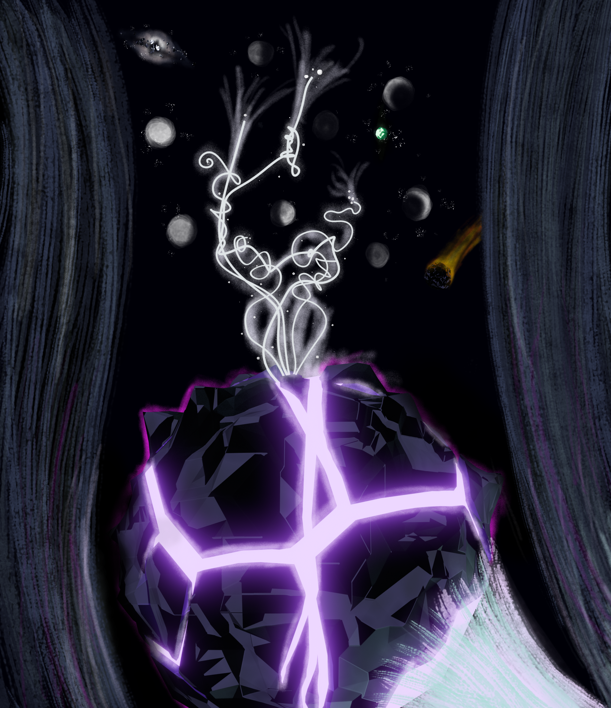

This is a piece I created using Blender and Affinity Photo.
The 3D portions were rendered using the Cycles renderer and custom toon shaders.
The 2D portions were hand drawn in Affinity Photo using several custom brushes and creatively utilizing layers to create three-dimensional effects.
